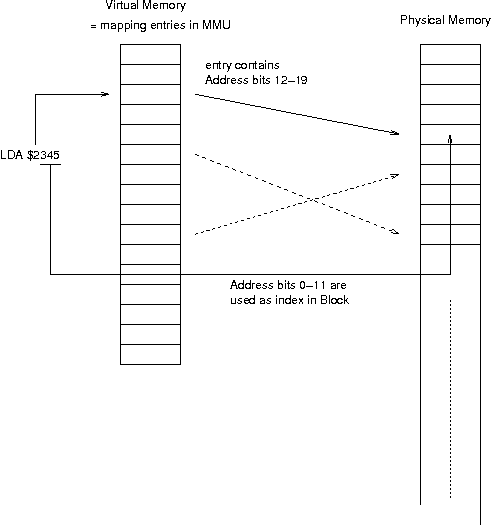

Virtual Address space for 6502 Microprocessors
(C) 1997-2010 André Fachat
In this article I want to give an overview of virtual memory handling for small computers. There also is an example of how to use this technique with a 74LS610 chip in a 6502 system.
In 1989 I wanted to built an own 6502 computer. I already had a C64, and I decided that it should be possible to address more than 64 kByte. But then I thought that the memory managemet should be better than the Commodore stuff. I then stumbled accross the 74LS610, a memory mapper and decided to use this chip.
Table of content
Before I go into the depths of the actual design, I want to say more about virtual addresses. What is a virtual address actually? Well, when using an address in an opcode of an assembly program, we normally consider this a physical address, i.e. the real address the data is in memory. This is true for simple CPUs, but not for CPUs with a virtual address space. Here the address used in an opcode - or even the PC (program counter) when loading an opcode itself - is only a virtual address, an index into a special table. This table then holds the real, physical address of the data to be loaded or stored (see diagram 1). Normally the table doesn't hold the new address for each byte, but for a whole block, typically in the range of 4-8 kByte in size.
An example: Consider a block size of 4 kByte in a 16 bit system, i.e. address bits 0-11 are used as index in the used block. Address bits 12-15 are then used as an index in the mapping table. If then the opcode says to read a byte from address $2345, the lower 12 address bits are the index in the block. The upper four address bits A12-15 are then an index in the mapping table, that can hold any number of bits for each of the 16 entries. When reading the byte at $2345, then the second entry in the mapping table is taken. It might contain more address bits or even special bits that could indicate write protection.
For small systems using virtual addresses is a nice way to expand address space. Of course the real, usable address space at any one moment is not larger than without virtual memory. Only by changing the MMU registers it is possible to use more than the usual address space. But even the 32 bit CPUs do have virtual memory, although their virtual memory address space is not smaller than their physical address space. So what is it used for then? Well, modern systems not only do address mapping, but the MMU also contains permission bits. With this concept, the CPU can be signaled when a 'forbidden' address space is accessed, like a read-only block is written to or a user program tries to read system memory.
But the memory mapping is used not only for permissions. A program on a Unix system, for example, always runs at a fixed address. This fixed address is in a virtual address space, of course. This way each process can have its own address space in virtual memory, which is then distributed in the physical memory as the operating system memory manager decides. Two processes can use the same binaries, i.e. the same pages in physical memory, when the blocks are set to read-only. Some implementations even use 'copy-on-write' pages, i.e. pages (blocks) that are copied when a write to this block occurs. The mapping is then changed such that the copied and modified block is only seen in the modifying process, while the other process(es) still see the unmodified block.
The MMU (as I will call this chip throughout this text) is a 16 times 12 bit register. The MMU internally has only one address decoder. That means that only one access (CPU read/write or Memory Mapping) may occur at one time. So the registers have to be used with time-sharing between the Address-Mapping and CPU register accesses.
The '610 has an output register latch, that allows saving the output value. The input "C" is the latch enable. With this latch, the address can be mapped during Phi2 low (CPU inactive, address mapping) and kept during Phi2 high (CPU active). The -CS input internally selects between the two input addresses (MA0-3 and RS0-3) to feed to the address decoder. Strobe is then used to enter the data into the register during write operation. -ME enables the output. If inactive (high), then the '610 outputs (MO0-11) are tri-state.
One problem is the state after power-up. The specifications don't say anything about the contents of the register then. Therefore the -MM input enables (when low) the memory mapping. If -MM is high, then the lines MO0-7 are set to zero, while MA0-3 are fed through to MO8-11. So after power-up reset the default should be to have -MM high, then initialize the MMU and only then enable it.
I have taken an excerpt (diagram 2) from the schematics of my selfbuilt computer to show you how to use this chip. I am only using 8 of the 12 bits in each register, as I can only access 8 bits at once with the 6502. It is of course possible to have a special register that is written before the real write to the MMU and that provides the higher bits. The outputs of the MMU then need not necessarily be used as address lines. One bit could, for example, be used as a read-only bit that disables write accesses to certain memory pages by hardware.
I have patched the MMU in the CPU address lines A12-15, thus making one memory block 4kByte in size. The MMU gives the mapped address lines BA12-BA19, allowing up to one Megabyte of memory to be addressed. Each of the 16 4kByte blocks in a 6502 address space can then be independently mapped to any of the 256 4kByte Blocks in 1 MByte address space.
Note: this part describes this schematics.
{kind=link}
The connector on the left of the diagram 2 is the bus connector. The CPU-side interface to read and write the MMU registers is put completely on the bus side of the CPU board. I did this because it is possible to cut the CPU from the bus in my design. Then the MMU registers could even be read by an external busmaster. -MMUSELECT is a low active chip-select line for the MMU, generated from the bus-side address lines.
As the general timing in a 6502 system is locked on Phi2, Phi2 is inverted and directly fed to -Strobe (write latch if R/-W low) and C. With -Phi2 fed to C, the register output are latched during the time the CPU accesses the MMU. Phi2 needs also to be put into the -CS signal, as the input for the internal address generator is selected with -CS. When address mapping takes place (Phi2 low), -CS must be high and when the CPU accesses the registers (Phi2 high), -CS must be low.
The RS-Flipflop made out of two NANDs controls the -MM input. Upon Reset, the -MM input goes high, thus disabling the memory mapping. The CPU addresses A12-15 are then directly mapped to MO8-11 and therefore BA12-15, while BA16-19 are kept zero. When the first write access to an MMU register takes place, the flipflop changes state and -MM goes low. In the next cycle the mapped addresses are used.
The CPU only comes into view as source of MA0-3, i.e. the source address to be mapped to MO0-11. The outputs are then given to a driver (74LS245), to have appropriate power on the bus. If the CPU is decoupled from the bus, then the Bus Enable input of the driver goes inactive.
Of course the BD0-7 Bus Data lines and the control lines are connected to the CPU as well (via drivers), I have only taken the relevant part for the MMU.
Using this chip now is quite simple, if you take care of a few things. To change the address mapping of a certain memory block, you just write the appropriate block number into the MMU register. You have to take care not to change the mapping of the actual page in which the code is just executing. The next opcode is then read from a totally different page. This is especially important when writing to the MMU the first time after a RESET, when mapping is enabled. If the initialization code is executing in at addresses $0f***, then the first write should write $0f into MMU register $f. This gives an identical mapping for this page after RESET (MMU disabled) and after the MMU has been enabled by this store. The other MMU registers are still undefined and thus need to be filled after that first write.
Of course, just having an MMU in a computer is not really satisfactory without real use of it. One possible (but not outstanding) use is to map certain memory blocks to allow a single process to access a RAM disk or so.
One excellent use of the MMU is multitasking. Especially the 6502, that is handicaped with 256 byte stack space (at a fixed address, $01**), could use a simple way to map the stack and the zeropage! In my 6502 OS/A65 multitasking operating system I use this MMU to give each process a unique memory environment. Each process then has its own stack space and its own zeropage. Although I cannot stop processes from poking anywhere in memory, the memory they can reach is only the one that is reserved for themselves. Even if they accidently write the MMU registers, after the next context switch they are set back.
To show how I use the MMU in my system I have listed the source code of the two gates here, where a process enters kernel space and where it leaves. When a process calls a kernel routine, it normally starts with "jsr memsys", and it normally ends with "jsr memtask". The two routines preserve all register values (except for the stack pointer), but remap the MMU register such that the process sees its own address space only. Well, the kernel sees more, it only gets its kernel RAM and kernel ROM mapped at $0xxx and $fxxx respectively. As these routines can be called from kernel space itself, they count the call level in "Syscnt" and check if they are really leaving to a process or not. (don't get confused with mmu and MMU in the listing - mmu is a local byte variable, MMU is the address of the MMU in the I/O space. Also a device only has a minimal mapping of one block - for speed reasons. The kernel ROM mapping, i.e. MMU register $f is never ever changed at all).
By writing the same physical block numbers in the process tables of two different processes, I can map memory blocks from one process to the virtual address space of another process and can call that 'shared' memory. I have already used this method to debug processes by monitoring their memory from a different process.
I have a special card for my selfbuilt computer, where I replace a 6502 of any other system with a cable to this card. The 64 kByte address space of this computer is then mapped somewhere in the 1 MByte physical address space. This way, for example, I checked new (EP)ROMs for my Commodore VC1541 floppy disk drive without the need of burning EPROMs. I just mapped the lower address space, and esp. the I/O area of the VC1541 to the usual addresses, but now in virtual address space. Only the blocks where the ROMs are were replaced with RAM blocks from my selfbuilt computer and these blocks were loaded with copies of the new ROMs.
Note: this part describes the write protect schematics.
{kind=link}
What do you need for additional features? You need more data bits. But the 6502 only has an 8 bit wide data bus and all of the bits are used to write address table entries to the MMU. And I didn't want to change the page size from 4 kByte to a larger size. So I decided to map the MMU into the memory twice. One of the address bits wasn't used for selection any more and is now used as additional data bit (D1 in the diagram). Well, after giving it through a tri-state driver that puts it on the MMU data input only when the CPU writes. That means, if you write to a MMU register at one location, the additional bit is cleared, if you write to the same MMU register at the other location, the additional bit is set. I decided to have the bit set when a page is read-write, and cleared when the page is read-only.
The mapping output (MO1) is then ore'd with the -MM MMU input. This disables write protection after reset and before the MMU is enabled. If the MMU is disabled after reset, all bits (except MO8-11) are zero output, and would thus protect writing at all. The result (-WP for Write Protect) is then given to the first 2-to-4 decoder (1/2 74F139, the right one in the diagram) as -E. The CPU R/-W is put on the A input, and the -MMUSEL line to the B input. A collision - i.e. a write attempt on a write protected page - occurs exactly when R/-W is low, -WP is low and -MMUSEL is high. The third condition ensures that the MMU can always be written to.
If -MMUSEL would not go into this equation, you can produce unpredictable results if you don't take enough care: assume the kernel at $f***, running the initialization routines. The CPU loads the MMU register $f first, to ensures that its's own page stays mapped. With this store, the MMU is enabled. But all other registers now contain garbage, as the MMU doesn't have a fixed reset condition. If the MMU is not mapped in page $f, then it is possible that the write-protect bit for the MMU page is cleared (i.e. protected) and thus it wouldn't be possible to change anything.
The output -Q1 of the 2-to-4 decoder satisifies the collision condition, it goes low if a collision is detected. My computer system has the feature that an external Bus Master can disable the CPU and decouple it from the bus. Therefore the second 2-to-4 decoder inverts the collision output from the first one and OR's it with the external -BE. So the output -Q1 (now called COLL) of the second decoder is high if an external bus master takes the bus or a collision is detected.
Fig.1: logic table for collision circuitry -BE -MMUSEL -MM -WP R/-W | COLL --------------------------------------+----------- 1 * * * * | 1 * 0 * * * | 0 * * 1 * * | 0 * * * 1 * | 0 * * * * 1 | 0 * 1 0 0 0 | 1
The COLL line is now given to the -E input of the data bus CPU bus drivers. If a collision is detected, the CPU is decoupled from the bus. But that's not enough. The memory would still see a write attempt and read open bus lines. Therefore the CPU R/-W line is XOR'd with the COLL line. If there is no collision but an external bus master, that doesn't matter, as R/-W is not given to the bus. If there is a collision, then R/-W is low (write) anyway, and XORing it with COLL makes it high (read). This way the memory sees a read access and writes its data on the bus, as well as the CPU. But the CPU bus driver is disabled, so noone cares, and the memory is not changed.
Virtual memory might not be useful for most of the 'DIY' stuff. In most cases a simple bank switching (which also just is a kind of virtual memory management) will still be enough when simple address space expansion is needed. Nevertheless, virtual memory is an interesting concept. It can really be useful in a multitasking environment. Here it protects processes from disturbing each other, or allows easy debugging. The 74LS610 is an easy (albeit not the fastest) way to introduce virtual memory to small or DIY systems.
Here are schematics and code
- mmu65.a65 Source code for the GeckOS/A65 memory environment switcher.
- mmu65b.gif Schematics for the basic use of a 74LS610.
- mmu65c.gif Schematics for the use of a 74LS610 with write protect bit included.
- The CS/A65 computer. Please note that the latest version of the CPU board makes an even better use of the MMU with its bus error condition detection.
- The GeckOS/A65 operating system
- More 74LS610 information.
Return to Homepage
Last modified: 2010-09-10